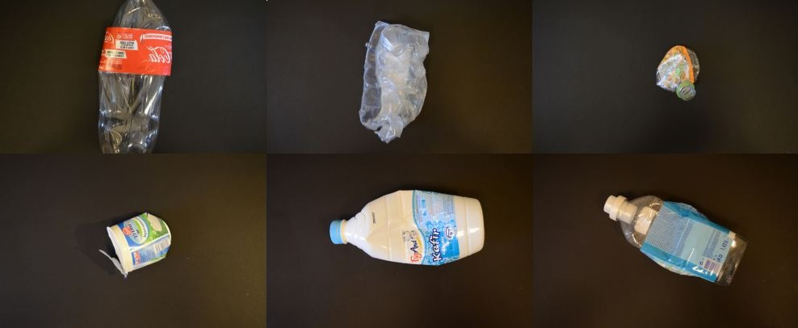
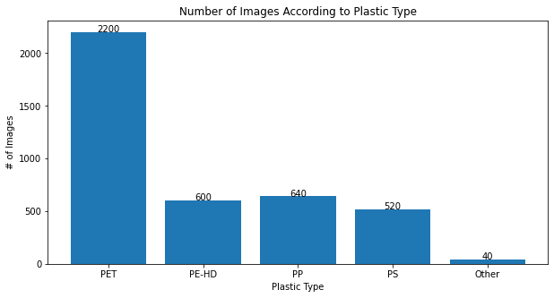
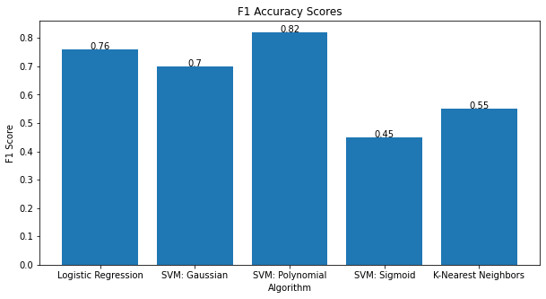

Machine Learning Algorithms for Consumer Plastics Identification and Sorting
Summary
Over the course of 10 weeks, I worked closely with a mentor to explore the efficacy of three different machine learning models for consumer-end plastic recycling sorting. I then wrote a detailed report on my findings. This was my first exposure to artificial intelligence and machine learning.
Problem
In 2018, only 8.7% of U.S. plastics were actually recycled. One of the biggest reasons why this number was so low is that plastics must be sorted by type because each type melts during the recycling process at a different temperature. Manual sorting is inefficient and misses recyclable material, while advanced sorting machines are often too expensive for smaller facilities. This ecosystem therefore calls for major innovation if plastic recycling is ever to hit desirable numbers.
Approach
Brainstorming how this could be solved, I proposed an at-home sorting solution powered by a camera-equipped recycling can and a machine learning model so that the sorting problem could be dealt with on the front end. This project focused on identifying a low-cost, low-power ML model.
Data + Preprocessing
Data preparation was performed in Google Colaboratory to reduce memory demands while keeping model inputs consistent.
- Dataset/source: WaDaBa Images Database (plastic waste images; filenames encode attributes).
- Dataset size: 4,000 images of 100 objects, 40 photos each under varied lighting, dirtiness, deformation, caps, rings, and positions.
- Preprocessing: resize to 224x337 then crop to 224x224, convert to .npy, store as [4000, 224, 224, 3], flatten to [4000, 150528], and extract plastic-type labels from filenames.


Models Evaluated
Used an 80/20 train-test split (fixed random state) and compared models with F1 scores via classification_report().
- Logistic Regression.
- SVM (Gaussian kernel).
- SVM (Polynomial kernel, degree 5).
- SVM (Sigmoid kernel).
- K-Nearest Neighbors (n_neighbors = 40).
Results
F1 accuracy and runtime were recorded on the 800-image test set.
Key Results
Key comparisons focus on accuracy, runtime, and memory after training.
- Best accuracy: SVM (Polynomial kernel, degree 5) reached 82% F1.
- Other models: Logistic Regression, SVM (Gaussian), and SVM (Polynomial) exceeded 70% F1; SVM (Sigmoid) and KNN were much lower and far from acceptable.
- Runtime (800-image test set): Logistic Regression 2.33 s, SVM (Polynomial) 304.207 s, SVM (Gaussian) 868.254 s.
- Hardware fit: Logistic Regression and SVM models are relatively memory-efficient after training and can run on low-cost hardware (e.g., Raspberry Pi).
Why this model won: SVM (Polynomial) offered the highest F1 while keeping inference under half a second per object and reasonable memory use.

Research Paper (PDF)
Full report with background, methodology, results, and discussion.
Read full report (PDF)Source Code
Google Colaboratory notebook where all data processing and model training occurred.
View codeConclusion
Support Vector Machine with a polynomial kernel best fits a consumer AI recycling bin by balancing accuracy, memory allocation, compute power, and time per classification. This model offers a practical tradeoff for low-cost deployment in homes.
What I Learned
- This was my first foray into machine learning, artificial intelligence, and coding in Python. I learned about the foundations of artificial intelligence and am now familiar with it at a high level.
- Prior to this experience, I had mostly worked with hardware applications and not software solutions. Working with machine learning algorithms made me realize the power of software to highly enhance low-end hardware and the importance of strong complementary hardware-software combinations.
- This was the first research project I ever completed. Learning how to conceptualize, design, and execute a research project was incredibly valuable.